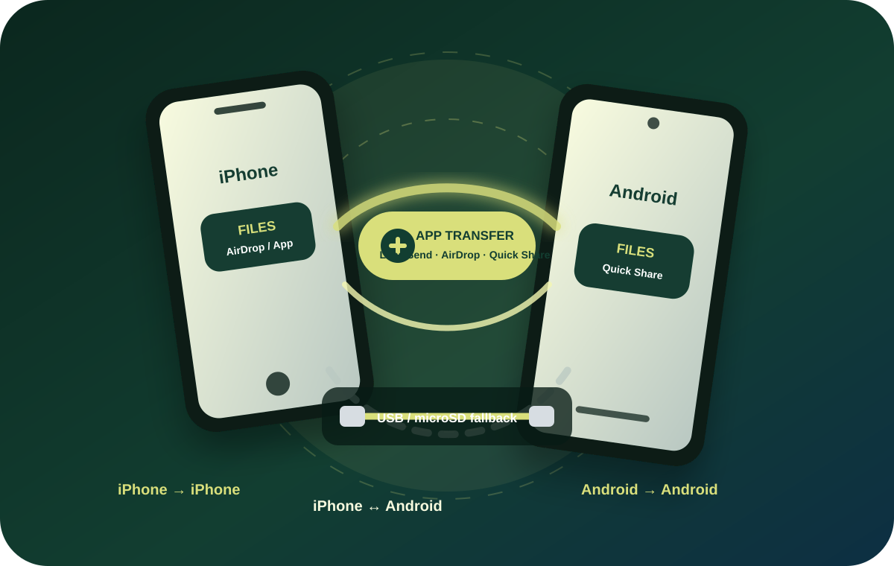

iPhone to iPhone
Use AirDrop when both devices are Apple and nearby. It is usually the fastest path for Apple-only transfers.
Share resources
The field goal is not for every person to repeat the same download. One phone can save the resource, then pass it by built-in sharing, LocalSend, cable, microSD, USB, or computer.
Choose the simplest route
Use AirDrop when both devices are Apple and nearby. It is usually the fastest path for Apple-only transfers.
Use Quick Share when both phones are Android. Keep both phones awake and accept the receiving prompt.
Use LocalSend on the same local Wi‑Fi or phone hotspot. It works across iOS, Android, Windows, Mac, and Linux.
Best for language libraries and phones with card support or adapters. Label cards clearly and keep them in cases.
Best with a phone adapter or computer. Open START HERE, copy needed files, and eject safely.
Use Windows Finder alternatives or Mac Finder to copy files between storage and a phone when direct sharing is hard.
Visual model
Ask one question first: “What are the two devices?” Then open only the walkthrough that matches.

Field rules